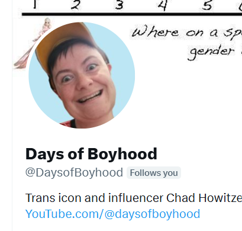
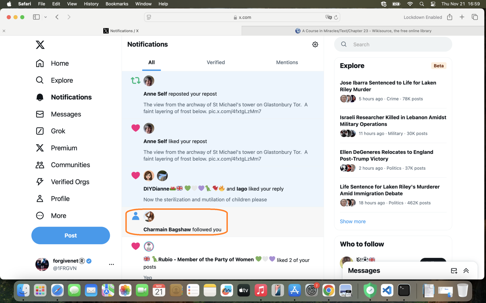
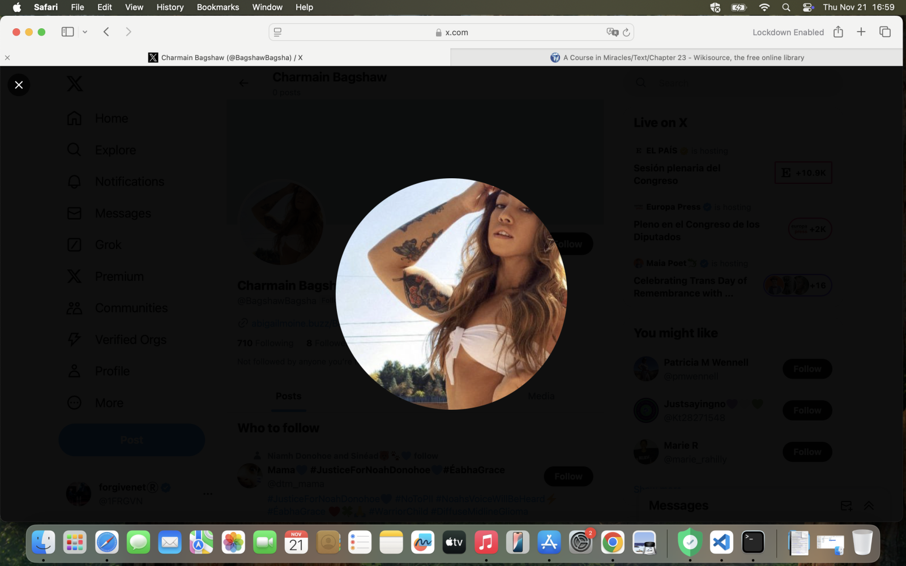
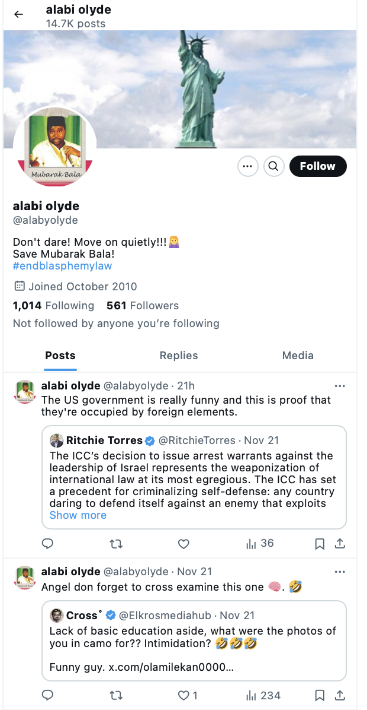
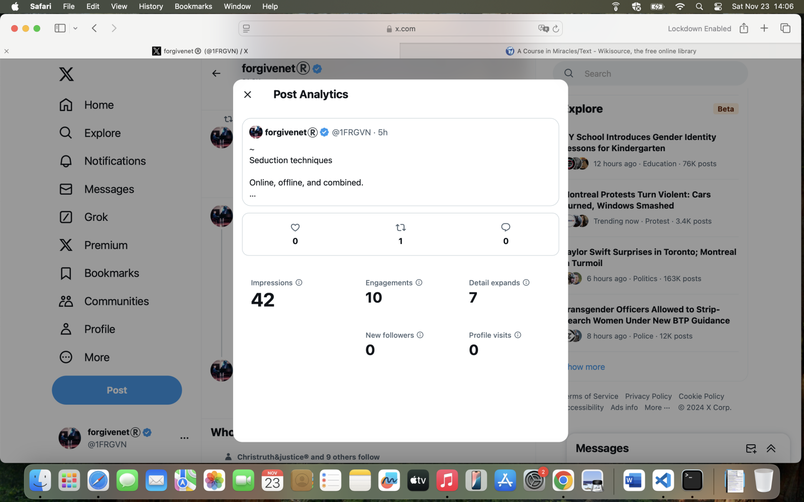

16/09/2024, 15:46 - Joel Barden: Hey Katherine ! A new role focused on Technical Writing has landed. They are called Nexera Foundation (Ecosystem) - looking and have worked with another client of ours Project Zero.
Have some big names behind them check them out over the socials. The requirements for this one are as simple as…
Technical Writer, Web3, Dev Background, Name in Web3 on CV
https://x.com/Nexera_Official
https://www.linkedin.com/company/nexerafoundation/
https://www.nexera.foundation/
https://nexera.medium.com/the-nexera-ecosystem-roundup-pushing-boundaries-with-tokenization-ebda15c68ba7
Let me know if you would like me to bullet you :)
27/10/2024, 23:57 - det sgt lydia cleaves: Hey Joel, checking in, probably you got my linked in, got made redundant on Friday :(
28/10/2024, 04:22 - Joel Barden: Hey Katharine! Oh no well I have a technical writer role I can send you over too ! Let me share all the details tomorrow when I get to the office 😁
28/10/2024, 04:23 - Joel Barden: In fact one moment I have my laptop will forward it all over
28/10/2024, 04:25 - Joel Barden: We are also no longer connected on LinkedIn for some reason so will share here. Do you have an updated resume for me?
28/10/2024, 04:27 - Joel Barden: https://www.linkedin.com/company/projectzeroio/
https://www.projectzero.io/
https://www.linkedin.com/in/sidjain02/
https://x.com/ProjectZeroIO
About Us
Project Zero is on a mission to empower Web3 products and services by removing the burden of infrastructure and blockchain data management. We envision a future where businesses can seamlessly focus on creating solutions to their core problems instead of the complexities involved in maintaining blockchain data operation infrastructure.
Project Zero is dedicated to building innovative Blockchain Data Infrastructure Platform that empower developers. Data Scientists and drive the next generation of technology. We have a flat hierarchy and you will have complete autonomy for your work.
28/10/2024, 04:28 - Joel Barden: Here’s the guys - looking for everything you have :)
Also some big parent companies also! Let’s touch base tomorrow and get that updated CV and make sure my notes are still active
28/10/2024, 04:43 - det sgt lydia cleaves: Yes let me sort that out for you tomorrow..
28/10/2024, 04:44 - det sgt lydia cleaves: We shld still be connected, I’ll check first thing
28/10/2024, 15:10 - det sgt lydia cleaves: Project zero looks good
28/10/2024, 15:10 - det sgt lydia cleaves: Just trying to reconnect now on linkedin
28/10/2024, 15:11 - det sgt lydia cleaves: Do you have my email? drkmurphy@ieee.org
28/10/2024, 15:11 - det sgt lydia cleaves: Getting an updated CV together now
28/10/2024, 15:48 - Joel Barden: Thanks Katharine - are you still flexible to the $135k with an overall packcage of incentives? Just updating the notes - Ideally $150k base but open to negotiation? Just accepted the invite
28/10/2024, 15:50 - Joel Barden: Yes I have that email on my notes :)
28/10/2024, 15:50 - det sgt lydia cleaves: My full package at polygon was 230
28/10/2024, 15:50 - det sgt lydia cleaves: Base 170
28/10/2024, 15:51 - det sgt lydia cleaves: Plus tokens
28/10/2024, 15:52 - Joel Barden: Not sure everyone can accommodate the Polygon prices 😂 so what you be your lowest on flexibility>? These guys can push the boundaries whats the lowest base your looking for
28/10/2024, 15:52 - det sgt lydia cleaves: ideally 17
28/10/2024, 15:52 - det sgt lydia cleaves: Oops sorry 170
28/10/2024, 15:52 - det sgt lydia cleaves: Happy to wait ,not in a rush either
28/10/2024, 15:53 - det sgt lydia cleaves: Can you send me an email plz and I’ll send over this CV
28/10/2024, 15:53 - Joel Barden: No worries let me change the base to $170k - see if this is something they can accommodate :)
Joel@hype-talent.com
28/10/2024, 16:02 - Joel Barden: Let me know when that has sent through
28/10/2024, 16:13 - det sgt lydia cleaves: Sent
28/10/2024, 16:15 - Joel Barden: Received :)
01/11/2024, 15:57 - Joel Barden: Hey Katharine! Sent an interesting message on LinkedIn :)
01/11/2024, 19:07 - det sgt lydia cleaves: Received and replied thank you. I keep this phone turned off mostly nowadays but check in every day so will get messages eventually.
01/11/2024, 20:57 - Joel Barden: Thank you Katharine I’ve been in Dublin so got this sorted now! Booked 3:30pm BST Monday!
01/11/2024, 21:01 - Joel Barden:


[email protected] account to make it inaccessible.


Kidney health check details






Info on this note


@ChoralSymphony, during one of our chats, that suggests to me there is more porn starring Brian and I, which I hope investigators will find if they haven’t already.The property management guy

@jctot19 account for the first time in ages¶Update in April 2026
@jctot19 account for the first time in ages, this Wednesday 20th November.
@jctot19 on it, and posted solely to my timeline without interacting with his account directly at all.Important
@jctot19 account is fundamentally a honey-trap account.~ Seduction techniques
Online, offline, and combined.
End goals

